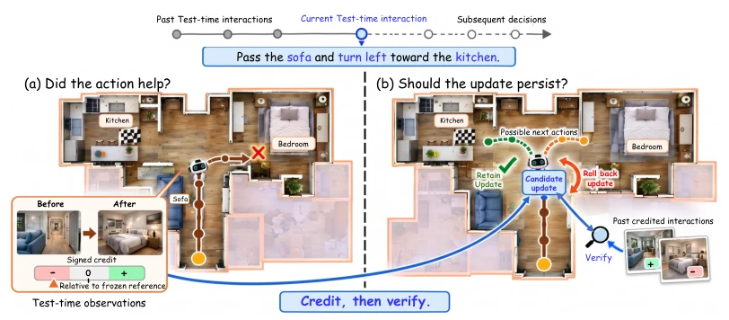
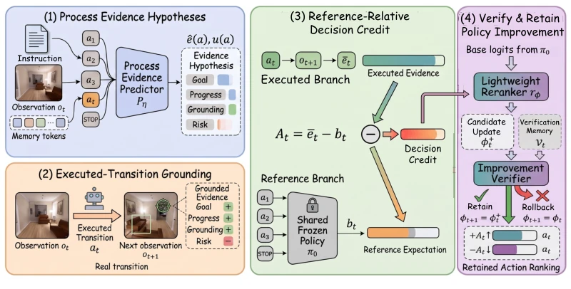
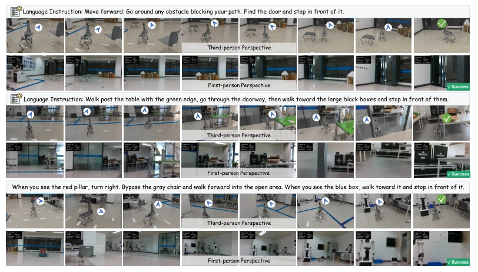
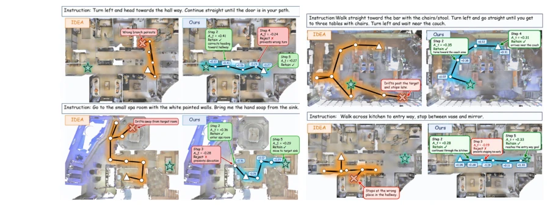

This paper casts a sobering light on the TTA-VLN field: frequent modification does not necessarily imply better performance. The authors keenly point out that existing TTA methods (such as Tent [18], IDEA [11]) focus solely on "modifying" without verifying "whether it is modified correctly," resulting in strategy drift. CGPI implements a "credit scoring" mechanism: after an action is executed, observe changes to directly compute "reference relative decision credit"; modify only if the score is high, and rollback if low. Although no external reward is added, relying on observation transitions to compute credit is a clever approach. However, relying on a lightweight reranker and memory verification, will it overfit in complex dynamic environments? Although simulation-to-real was demonstrated, no detailed data was provided, raising suspicions of overpromising. Overall, separating "improvement" from "change" is more reliable than blind entropy minimization, but computational overhead and memory management are not detailed, real-world test samples are too few, and the issue of credit failure under extreme conditions is not discussed, casting doubt on robustness.
VLN is prone to failure in unseen environments, and TTA is a potential solution. However, existing TTA methods rely on uncertainty or trajectory feedback and cannot directly determine whether actions truly advance the goal. It is like driving by looking only at the dashboard and not the road, easily leading to deviation. The core challenge is: how to identify whether interactions support goal improvement? How to determine if updates are worth retaining? Existing signals do not directly evaluate actual consequences, leading to strategy drift. For instance, although IDEA [11] utilizes adaptation experience, it does not verify whether updates are effective. This paper emphasizes that TTA must distinguish between "strategy change" and "strategy improvement" to avoid invalid adaptation. Distribution shift can distort local action preferences, leading to deviation from the intended course, while existing methods lack direct evidence indicating whether interactions contribute to goal-oriented progress, which is the core pain point of TTA-VLN.

Figure 1: Motivation for CGPI. TTA enables online policy change, but change does not necessarily imply improvement. Decision credit first identifies whether the current interaction provides local evidence of goal-directed improvement; the resulting candidate update is then verified against past credit-supported interactions before being retained or rolled back.
CGPI follows an Identify-Propose-Verify-Retain cycle. 1. Identify: after executing an action, compare actual observations with the frozen strategy's local expectations to calculate reference relative decision credit (Credit), which can be positive or negative. 2. Propose: credit drives a lightweight reranker update to generate candidate strategies. 3. Verify: check if the candidate matches historical credit-supported interactions and does not deviate excessively from the frozen strategy. 4. Retain: update only if verification passes, otherwise rollback. The backbone is frozen, only the reranker is tuned. Credit calculation includes four evidence items such as Goal and Progress, compared after standardization. A memory bank is maintained during the verification stage to ensure update consistency. Credit is recovered through observation-induced transitions without requiring external feedback. This mechanism separates improvement identification from retention, ensuring update reliability.

Figure 2: Overview of CGPI. The method constructs local process-evidence hypotheses and grounds the executed decision using its actual resulting observation. Reference-relative comparison recovers signed decision credit, which proposes a candidate modification to an action reranker. The candidate is then verified against past credit-supported interactions and retained only when sufficiently supported and satisfying the proposal-state reference constraint; otherwise, it is rolled back.
Evaluated on REVERIE, R2R, and R2R-CE, using backbones such as HAMT and DUET. Metrics include SR and SPL. CGPI generally outperforms IDEA, Tent, etc. REVERIE Val Unseen SR increased from 34.92 to 36.97 (HAMT). Ablation studies show both Grounding and Reference are important. The verification mechanism can filter out bad updates (AIR improvement). Real-world Unitree Go2 robot tested zero-shot sim-to-real. Experiments cover discrete and continuous environments, demonstrating the method's generalizability. Ablation experiments indicate that enabling only motion credit or STOP credit both yield improvements, with the combination achieving the best results. The verification stage significantly reduces strategy drift and improves the quality of retained candidates.

Figure 3: Real-world qualitative results of CGPI on a Unitree Go2 robot. We show third-person views and egocentric observations for three executed trajectories.

Figure 4: Qualitative comparison of IDEA and CGPI in unseen environments.